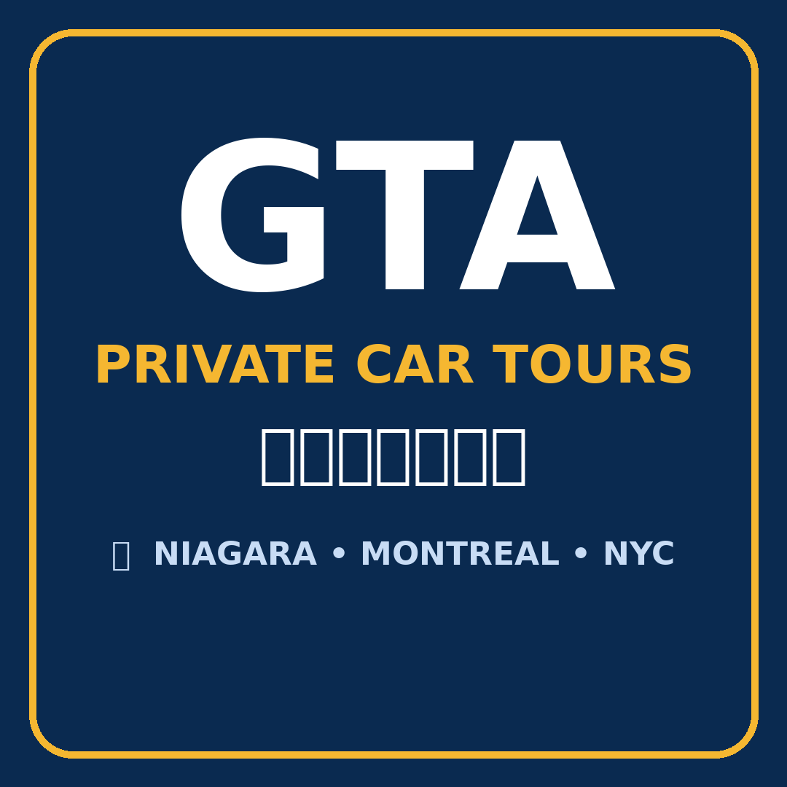

GTA Private Car Tours GTA Private Car Tours整輛車和司機只為你一組客人服務 — 不併團，不用趕巴士班次。乘坐最新第 9 代 Toyota Camry，大多倫多地區上門接送，行程你決定。
多倫多市內遊 · 尼加拉瀑布 · 藍山 · Muskoka 與阿岡昆 · 京士頓與千島湖 · 渥太華 · 蒙特婁 · 魁北克市 · 海洋省份 · 美國紐約 · 北美長途包車
每趟都是私人行程，彈性十足：何時出發、停哪裡，當天都可以商量。以下行程只是起點，把你的日期和想去的地方告訴我們，我們為你度身安排。
經典路線：馬蹄瀑布與 Table Rock、尼加拉景觀大道、漩渦急流與花鐘，再逛尼加拉湖邊小鎮舊城區，回程順路停一間酒莊。另有夜間版，看燈光瀑布和季節煙火。
CN 塔與湖濱、卡薩羅馬城堡、釀酒廠區、聖羅倫斯市場、肯辛頓市場與 Queen West — 適合探親訪友、抵達多倫多第一天，或轉機停留（行李安心放車上）。
藍山度假村：夏天坐纜車、冬天滑雪，再去全世界最長的淡水沙灘 Wasaga Beach — 距 GTA 約兩小時的四季好去處。
遊覽 Lake Muskoka 湖邊小鎮 Gravenhurst、Bracebridge、Port Carling，湖景瞭望點、瀑布，季節對了還可坐湖上遊船 — 安省度假屋地區，夏秋最美。
60 號公路走廊步道、遊客中心與湖景觀景點。每年最多人問的賞楓之旅 — 能平日去最好，記得早出發。
半島尖端的 Grotto 石洞與喬治亞灣清澈湖岸。路程較長，5 月至 10 月最佳，我們會配合你的到訪時間安排停車時段。
歷史小城京士頓，再到千島湖 — 聖羅倫斯河上星羅棋布的小島風光，可由 Gananoque 或 Rockport 坐季節遊船。
國會山莊、麗都運河、拜沃德市場與國家級博物館。可以安排成長日一日遊、兩日遊，或單程送達。
舊蒙特婁與聖母大教堂、皇家山、聖若瑟大教堂、舊港，還有正宗貝果和 Poutine — 住一晚，不用趕。
北美最古老的城牆城市：舊城區、芳堤娜城堡、蒙莫朗西瀑布與奧爾良島，兩天慢慢逛。
最受歡迎的多日組合：兩座法語城市 — 先蒙特婁、後魁北克市，沿途欣賞聖羅倫斯河風景停站。
為你拼一條私人路線：多倫多 → 京士頓與千島湖 → 渥太華 → 蒙特婁 → 魁北克市 → 尼加拉瀑布。你的車、你的司機、你訂的酒店 — 駕駛交給我們，你不用煩。
哈利法克斯、佩姬灣、盧嫩堡、愛德華王子島與芬迪灣。真正的公路旅行，逐團報價 — 把日期和想去的地方傳給我們即可。
在 Facebook 或 Instagram 傳 DM，或用 WhatsApp 搜尋 @unionville 聯絡。告訴我們：日期、上車地址、想去的地方、乘客人數和行李情況。
價格按距離與時間決定，以「每輛車」計，不是每人計。我們會回覆一個清楚的報價和建議行程 — 沒有公開價目表，查詢不附帶任何義務。
報價合意就可以確認細節。長途和多日行程一般需要付訂金留位 — 訂金金額和取消條款會連同報價以書面講清楚。
當天上門接送，彈性停站、拍照、吃飯 — 跟你的節奏走，不用就巴士時間表。
上車地點遍及大多倫多地區：萬錦、多倫多、列治文山、旺市、士嘉堡、北約克、怡陶碧谷、密西沙加、賓頓、奧克維爾、咸美頓及周邊社區。目的地遍及安省與魁北克省、海洋省份、美國，以及北美任何公路可達的地方。
我們提供 英語、粵語、華語 服務 — 用你最自在的語言傳訊息就好，旅途中也能和司機真正溝通：行程、停站和美食，都可以商量。
我們沒有公開價目表：每趟行程按距離與時間報價 — 去多遠、用車和司機多久。用 WhatsApp（@unionville）或 DM 把日期、上車地點和目的地告訴我們，我們會回覆一個以「每輛車」計的清楚報價，不是每人計。查詢免費，不一定要訂。
報價包括你議定行程的私人車輛和司機。除非報價另有說明，高速公路收費（包括 407）、停車費、景點門票、餐飲，以及多日行程的住宿等，通常另外計算。所有內容會在預訂前以書面確認，當天不會有意外收費。
Camry 最多載 4 位乘客，1–3 位最舒適，長途尤其明顯。人數較多或行李很多？先傳訊息給我們，我們會老實告訴你坐不坐得下。
這是私人包車：車和司機在整趟行程只屬於你 — 絕不跟陌生人併團。司機會和你一起規劃路線和停站，沿途分享在地資訊；景點門票和景點內的導覽屬另外安排，由你自行預訂（我們可以告訴你官方購票渠道）。
一日遊通常提早幾天就可以，但週末、假期和賞楓季節很快爆滿 — 越早越好。多日和長途行程（蒙特婁、魁北克市、海洋省份、紐約、西岸）更要盡早預訂，我們才能為你留住日期。
計畫有變請盡早告訴我們。你確切的取消條款會在付款前連同報價以書面確認。長途和多日行程一般需要付訂金留位，訂金條款也是書面確認的一部分。
可以 — 水牛城和紐約市行程都有。過境是每位乘客自己的責任：每位乘客須攜帶入境美國和返回加拿大的有效證件，預訂前請先確認好。
可以。YYZ 接送覆蓋整個 GTA，包括機場直達尼加拉瀑布或其他目的地。傳訊息時把航班資料給我們，我們就能配合你的抵達時間安排接機。
把日期、上車地址、目的地和乘客人數告訴我們，我們會回覆報價和建議行程。不設公開價目，查詢無義務。
打開 WhatsApp，搜尋用戶名 @unionville 即可聯絡我們。英語、粵語、華語都可以。
在我們的 Facebook 專頁傳 DM：GTA Private Car Tours 多倫多包車旅遊。（專頁連結將於開業時補上。）
在 Instagram 搜尋 GTA Private Car Tours 並傳訊息。（帳號連結將於開業時補上。）